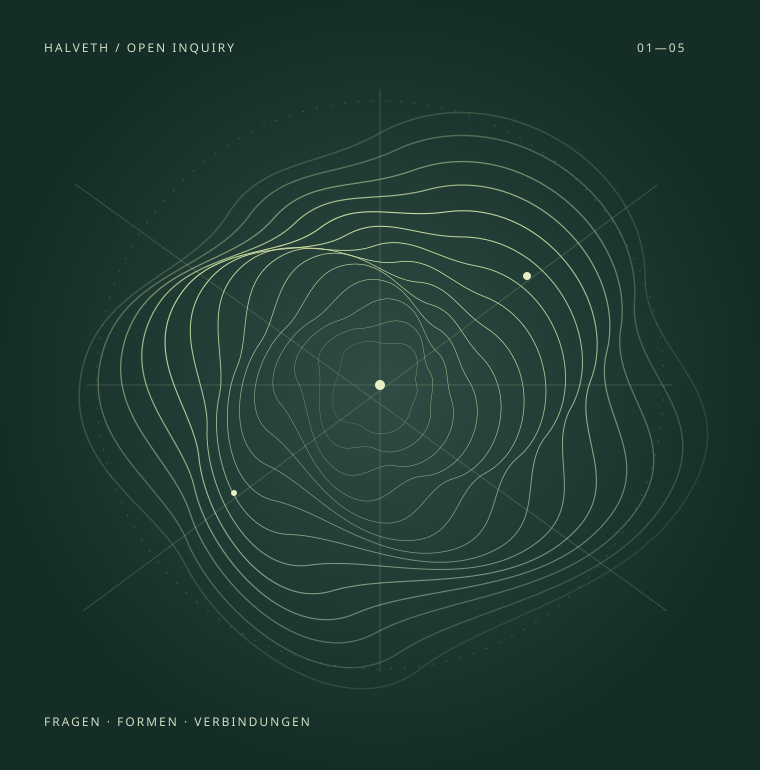
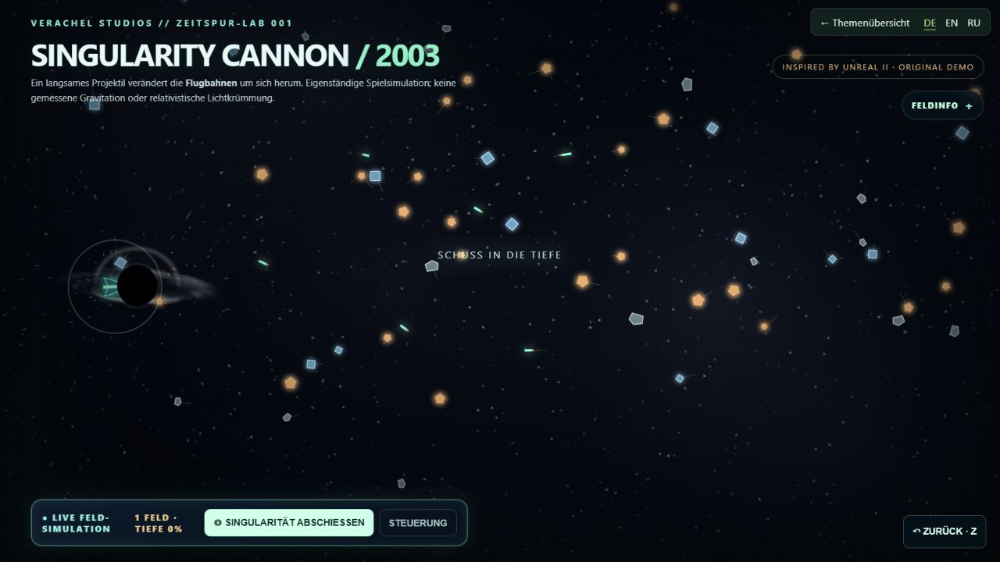

01 / НАТИВНЫЙ ИГРОВОЙ МИР
ASHBOUND
Книги становятся пространством.
Идеи — игровыми мирами.
Самостоятельный проект Unreal: архив, заклинания и книги в 3D-пространстве. Откройте опубликованную версию Windows или изучите исходники разработки.
HALVETH · ПРОГРАММЫ / ИНТЕРАКТИВНОСТЬ / ИССЛЕДОВАНИЯ
Я разрабатываю программы, интерактивные миры и учебные инструменты.
Избранные приложения, прототипы и технические модели — с понятным входом, исходниками и состоянием разработки.

HALVETH / ИЗБРАННЫЕ РАБОТЫ
Игровой мир. Интерактивная сцена. Воспроизводимая проверка. Три прямых входа в техническую работу.
01 / НАТИВНЫЙ ИГРОВОЙ МИР
Книги становятся пространством.
Идеи — игровыми мирами.
Самостоятельный проект Unreal: архив, заклинания и книги в 3D-пространстве. Откройте опубликованную версию Windows или изучите исходники разработки.

02 / ПРЯМО В БРАУЗЕРЕ
Один щелчок.
Другой взгляд.
Singularity Cannon превращает графическую идею в интерактивную сцену. Откройте, попробуйте управление и изучите реализацию.
Интерактивная браузерная графика · художественная симуляция.
$ npm test139 JavaScript + 49 PythonТесты пройдены локально · 22.10.2026SOURCE / 7e5f21ea2cd203 / КОД И КОНТРПРИМЕРЫ
Что произойдёт,
если изменить входные данные?
Локальные модели JavaScript и Python с конкретными контрпримерами. GENESIS показывает переходы состояний, повторное воспроизведение и скрытый параметр gate в браузере.
Проверки относятся к предоставленным модельным контрактам и не заменяют внешнюю проверку продукта.
Следующий шаг
ИЗБРАННЫЕ ТЕХНИЧЕСКИЕ РАБОТЫ
Веб-приложение
Каталог уроков и упражнений по цифровым навыкам, программированию и математике. Чтение без обязательного аккаунта.
Проверка: изучение исходников
Веб-приложение
Учебная карта, игровые задания и отображение прогресса для самостоятельного обучения.
Проверка: изучение исходников
ИЗБРАННЫЕ ТЕХНИЧЕСКИЕ РАБОТЫ
Настольный проект
Проект Windows с опубликованными исходниками, интерфейсом и документированным процессом выпуска.
Проверка: изучение исходников
Браузерный прототип
Браузерный интерфейс и модели JavaScript для сравнения введённых вариантов. Публичные исходники относятся к браузерной версии.
Проверка: изучение исходников
ИЗБРАННЫЕ ТЕХНИЧЕСКИЕ РАБОТЫ
Предварительная версия Windows · в разработке
Самостоятельная игра Unreal в разработке: пепельная долина, архив, заклинания и книги в 3D-мире. Предварительная версия Windows v0.4.2 и текущие исходники относятся к разным состояниям.
Проверка: изучение исходников
Прототип игры
Самостоятельный игровой проект C++ для Unreal Engine с описанием состояния разработки и сборки.
Проверка: изучение исходников
Прототип игры
Фэнтезийная песочница с процедурной генерацией мира и экспериментальными диалоговыми системами.
Проверка: изучение исходников
Переработка в разработке
Инструменты OpenMW и разработка переработки игры на основе стороннего движка и игровых материалов.
Проверка: изучение исходников
Интерактивные прототипы
Браузерная графика, пространственные сцены и технические демонстрации с отдельными состояниями разработки.
Проверка: изучение исходников
ИЗБРАННЫЕ ТЕХНИЧЕСКИЕ РАБОТЫ
Локально проверенная модель
Избранные модели JavaScript и Python; в публичной ветке добавлен GENESIS с повторным воспроизведением, двумя взглядами и проверяемой проекцией состояния.
Проверка: локальные модельные тесты
npm testВизуальная модель
Интерактивная визуализация движения и различий состояний в браузерной модели.
Проверка: изучение исходников
Экспериментальные инструменты
Инструменты PowerShell и файлы состояния для экспериментального управления TRIAD: ASTER, RACHEL и SHELLA.
Проверка: изучение исходников
Форк с дополнениями
Форк с локальными исследовательскими дополнениями. Основная часть кода относится к java-tron; собственные дополнения выделены отдельно.
Проверка: изучение исходников
Концепция и интерфейс
Браузерный интерфейс, визуализация и концептуальные материалы для идей дронов и роёв. Акцент: представление и проектирование системы.
Проверка: изучение исходников
Сотрудничество
Для разработки программ, прототипов, понятных интерфейсов или учебных инструментов: опишите задачу, аудиторию и желаемый объём.
security@halveth.de ↗Каждый пример работы ведёт к исходникам и описывает состояние разработки.